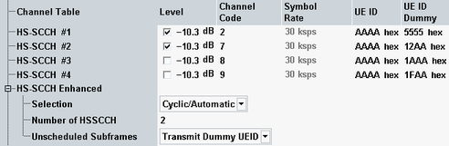

This section configures an HS-SCCH set with up to four HS-SCCH channels.
For a multi-carrier scenario, all settings are available per carrier. For switching between the carriers, see "Select Carrier".
Note that two HS-SCCH are required for an R7, R8 or R9 connection, while one HS-SCCH is sufficient for an R5 connection.

Defines the level of a channel relative to the base level of the generator (see "Output Power (Ior)").
The checkbox allows you to switch off the power of an HS-SCCH. Switching off the power does not remove the channel from the HS-SCCH set, see also "Number of HSSCCH".
Option R&S CMW-KS401 is required.
Remote command:Defines the channelization code number of an HS-SCCH channel.
For background information, see "Channelization Codes"
Option R&S CMW-KS401 is required.
Remote command:Displays the symbol rate of a channel. This value is fixed.
Option R&S CMW-KS401 is required.
UE identity (=H-RNTI); 16-bit value, entered as a 4-digit hexadecimal number. The UE ID identifies the UE for which data is transmitted in the corresponding HS-DSCH TTI. As the entire HS-SCCH set is allocated to a single UE, all channels have the same UE ID. Modifying one UE ID changes all displayed UE IDs.
In unscheduled subframes, the UE ID is not used. Which HS-SCCH actually carries the UE ID in scheduled subframes depends on parameter "Selection".
Option R&S CMW-KS411 is required.
Remote command:Four-digit hexadecimal number, to be sent in HS-SCCH subframes which are not allocated to the UE (unscheduled subframes).
Alternatively DTX can be sent in unscheduled subframes, for configuration see "Unscheduled Subframes".
Option R&S CMW-KS411 is required.
Remote command:Selection of the HS-SCCH that carries the UE ID in scheduled subframes. The UE ID can be assigned to a fixed HS-SCCH number or the assignment can change after each subframe.
In accordance with the 3GPP requirements, a change of the HS-SCCH is suspended when the UE is scheduled in two consecutive subframes. This scenario occurs for an inter-TTI distance of 1, if the number of HARQ processes is sufficiently large. For six or more HARQ processes, the UE is continuously scheduled so there is no change of the HS-SCCH.
For R5 connections (QPSK or 16-QAM), only one HS-SCCH is required.
For R7 and higher connections one HS-SCCH is required for QPSK, while two HS-SCCH are required for 16-QAM and 64-QAM modulation. One of the two HS-SCCH is selected for usage depending on the HS-PDSCH channelization codes.
Because of the complex selection rules, the recommended setting for R7 and higher releases is "Cyclic/Automatic". For R5 connections, all values can be used.
- No. 1 to 4
The UE ID is transferred on the selected fixed HS-SCCH. - Random
The HS-SCCH for each transmission is selected at random among the channels 1 to n (n = "Number of HSSCCH"). This setting can be used as a stress test for the UE to check whether it can actually detect subframes irrespective of the HS-SCCH carrying the UE ID. - Cyclic/Automatic
Cyclic applies to a R5 connection. The UE ID is transferred on the HS-SCCH sequence 1, 2,…, n, 1, 2,…, where n is the "Number of HSSCCH", see also "Example for cyclic HS-SCCH selection (R5 connection)".
Automatic applies to a R7 or higher connection. The UE ID is transferred on a fixed HS-SCCH, selected as follows:– QPSK modulation: HS-SCCH #1 is used – 16-QAM or 64-QAM modulation: Either HS-SCCH #1 or HS-SCCH #2 is used. The HS-SCCH number depends on the total number of assigned HS-PDSCH channelization codes and whether the first HS-PDSCH channelization code number is even or uneven. See the following table.
First HS-PDSCH code number | ||
|---|---|---|
HS-PDSCH channelization codes | Even (2, 4, ...) | Uneven (1, 3, ...) |
1 to 7 HS-PDSCH codes | HS-SCCH #1 | HS-SCCH #2 |
8 to 15 HS-PDSCH codes | HS-SCCH #2 | HS-SCCH #1 |
Option R&S CMW-KS411 is required.
Remote command:Number of HS-SCCHs contained in the HS-SCCH set. A selected value n means that the set contains the HS-SCCHs number 1 to n. See also "Example for cyclic HS-SCCH selection (R5 connection)".
Option R&S CMW-KS411 is required.
Remote command:Defines the transmission in the gaps between consecutive HS-SCCH subframes allocated to the UE (inter-TTI distance > 1).
Option R&S CMW-KS411 is required.
- "Transmit Dummy UEID": The HS-SCCH power is maintained and the unscheduled HS-SCCH subframe contains the defined dummy UE ID, see "UE ID Dummy".
- "DTX": Discontinuous transmission in unscheduled HS-SCCH subframes (output power switched off)
- HS-SCCH #1: Level = –7 dB
- HS-SCCH #2: Level = OFF
- HS-SCCH #3: Level = –7 dB
- HS-SCCH #4: Level = OFF
- Selection = Cyclic/Automatic
- Number of HSSCCH = 3
- Inter-TTI = 2 configured in HSDPA channel configuration, see "HSDPA Settings"
- Subframe 0: UE ID on HS-SCCH #1
- Subframe 1: UE unscheduled due to inter-TTI = 2
- Subframe 2: UE ID on HS-SCCH #2, but signal power off. UE returns DTX instead of ACK or NACK.
- Subframe 3: UE unscheduled
- Subframe 4: UE ID on HS-SCCH #3
- Subframe 0: UE unscheduled
- Subframe 1: UE ID on HS-SCCH #1
- Subframe 2: UE unscheduled
- Subframe 3: UE ID on HS-SCCH #2, but signal power off. UE returns DTX instead of ACK or NACK.
- Subframe 4: UE unscheduled